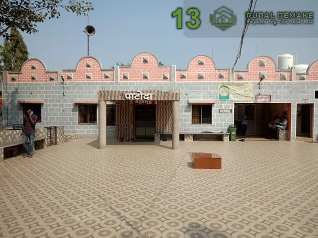
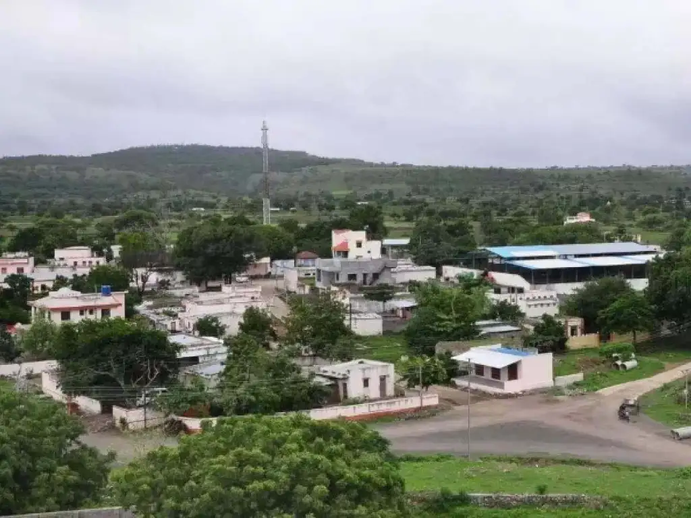
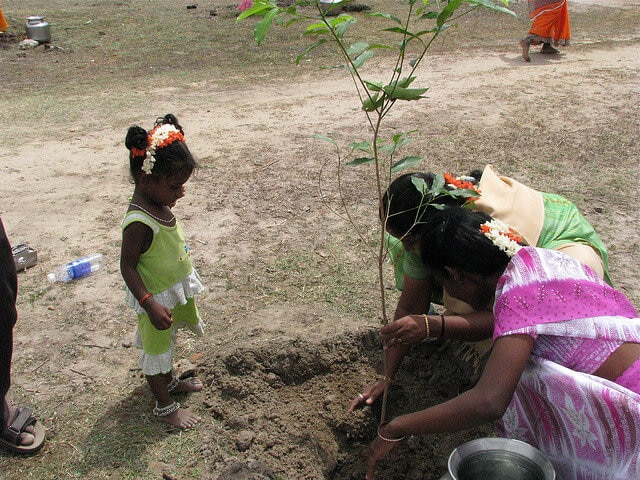
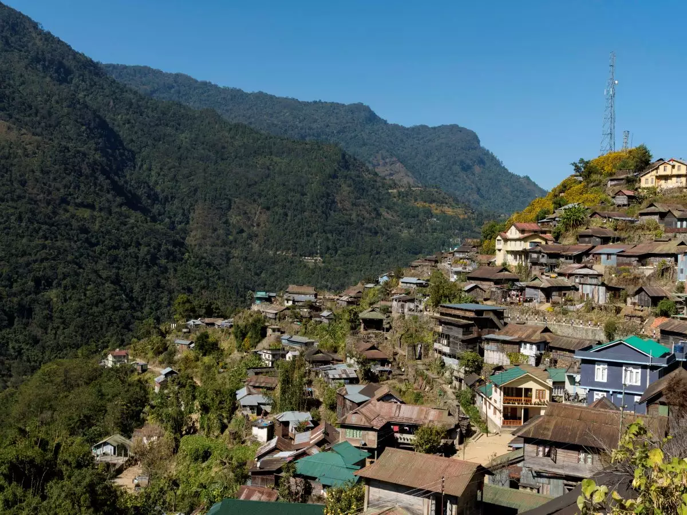
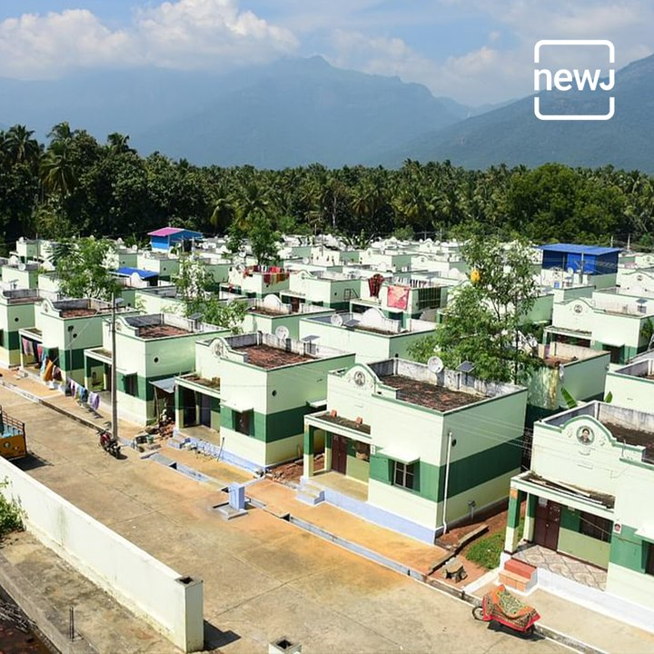

Connecting Rural and Urban Communities
Report and Solve Village
Problems

Patoda: Patoda Gram
Panchayat
Shri Bhaskar Pere, the Sarpanch of Patoda Gram
Panchayat, has transformed his village, located
about 13 kilometers from Aurangabad, into a model of
cleanliness and innovation. Under his leadership,
Patoda has received numerous awards, including the
‘Nirmal Gram’ award and two honors from the
President of India. The village offers free services
like dinner, milk, drinking water, and internet to
its residents, provided they adhere to the
Panchayat’s rules. Patoda is free of open
defecation, boasts paved roads, waste management
systems, and solar-powered amenities. The village
also promotes social unity through community meals
and Dhobi Ghats for women. Shri Pere’s visionary
leadership and commitment to sustainability have set
a high standard for rural development, making Patoda
a model village for others to emulate.

Hiware Bazar: Village of
Millionaires
Hiware Bazar, a once-drought-stricken village in
Maharashtra, India, has transformed from a dire
state of poverty and ecological collapse into a
model of agricultural and community revival. Through
effective watershed management, reforestation, and a
shift to sustainable farming practices, the village
has turned its fortunes around, with farmers now
earning significantly more than the national average
and the entire community thriving. This turnaround,
spearheaded by Popatrao Pawar and supported by local
efforts, has not only revitalized agriculture but
also improved education, healthcare, and
infrastructure, making Hiware Bazar a beacon of hope
and a replicable model for other drought-prone
regions in India.

Piplantri: Village where girls
rule
In Piplantri, Rajasthan, a village has been
rejuvenated through the vision of Shyam Sunder
Paliwal, inspired by his daughter's tragic death in
2007. Paliwal initiated a program where 111 trees
are planted for every newborn girl, combining
environmental and gender empowerment goals. This
initiative has led to over 350,000 trees being
planted, improved water management, and enhanced
attitudes towards women. Additionally, the program
opens bank accounts for girls and supports their
education, increasing female school enrollment and
shifting local perceptions of girls from burdens to
valued members of the community. Piplantri's
transformation showcases how community-driven
efforts can effectively revitalize both
environmental and social values.

Khonoma: Asia's First Green
Village
Khonoma Village, located in Nagaland, India, is
renowned as the country's first eco-friendly
village, combining rich history and vibrant culture
with sustainable practices. Home to the Angami
tribe, known for their bravery and craftsmanship,
the village is famous for resisting British rule in
1879. Today, Khonoma is a model of wildlife
conservation, banning hunting and forming the
Khonoma Nature Conservation and Tragopan Sanctuary.
This community-led initiative protects biodiversity,
including rare species like Blyth's tragopan and the
mithun. The village promotes eco-tourism with scenic
terraced paddy fields, lush forested hillsides,
birdwatching opportunities, and charming
hobbit-style homes. Visitors can savor local
cuisine, such as smoked pork and bamboo shoot curry,
and purchase unique handicrafts, all while
experiencing the authentic lifestyle of Khonoma.

Odanthurai: A Smart Village of
Tamilnadu
Odanthurai Gram Panchayat in Tamil Nadu has become a
model for sustainable energy. The village generates
its own power with a 350-kw wind turbine,
established in 2006 under the leadership of
Panchayat President Shanmugam. This initiative was
financed through a combination of government support
and a bank loan, making it the first power project
by a local body in India. The wind farm produces 7.5
lakh units of electricity annually, exceeding the
village's needs and generating income by selling the
surplus. Additionally, Odanthurai has implemented a
9kW biomass gasifier for water pumping, saving 70%
on costs, along with solar lighting and biogas
systems. These efforts demonstrate how strategic
energy planning can enhance efficiency and
sustainability, setting an example for other
communities.

Baghuvar: A Model Village
Village
What makes Baghuvar village in Madhya Pradesh stand
out is its unique sense of community that has helped
the village drive transformational change without a
leader to oversee. In other words, this village is
the only one of its kind as it has functioned
without a sarpanch since independence. Here, every
community member is a leader in their own right and
takes ownership of efficiently improving the village
infrastructure.
Thanks to this unique model, today the village
boasts an exemplary sanitation infrastructure, with
almost every house having its own toilet, a common
toilet complex for social gatherings, underground
sewage lines and a substantial number of biogas
plants. With the help of these facilities, they
produce their cooking fuel and also manage to
generate power to light up the entire village.